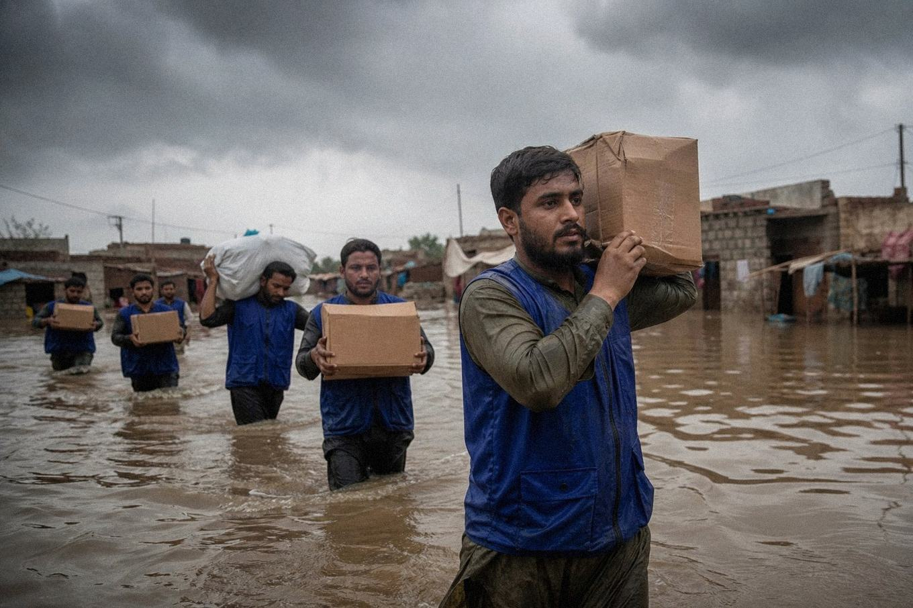

Fundraising
One campaign at a time, fully budgeted, fully reported. This is what your giving is building right now.
Clean Water Phase II
Phase I proved the model: 9 hand pumps and 2 filtration units now serve 4,100 people in Muzaffargarh and DG Khan, with local caretakers and twice-yearly water testing. Phase II brings safe water to 12 more villages in Muzaffargarh and Rajanpur — the districts hit hardest by the 2025 floods.
*Live counter updates weekly from campaign records.
[GOFUNDME_URL]
What Phase II buys
- 25× Deep-bore hand pumps, installed & tested — PKR 95,000 each
- 3× Solar-powered filtration units — PKR 850,000 each
- 12 Trained local caretakers with 3-year maintenance funds
- 24 Water quality tests (installation + 6-month follow-up)
Campaign QR code appears here when the GoFundMe goes live — tested before publishing.
How to share our campaign
Copy the link
Once the GoFundMe button activates, paste the link into WhatsApp, SMS or email — one honest sentence about why you gave does more than any poster.
Scan or show the QR
The official QR opens the fundraiser instantly on any phone camera — ideal for shops, mosques noticeboards and events.
Point donors to this website
Send questions to our Transparency and FAQ pages — people give more when they can verify first.
Follow up after giving
Donors receive a completion report with photos, coordinates and test results for every water point funded.

Eligibility & donor protection
- Registered foundation (Societies Act 1860, Reg. No. RP/5907/2024, Multan).
- GoFundMe campaign run by a verified organiser in a supported country, with a written fund-transfer plan.
- Annual independent audit — 2025 report published on our Transparency page.
- Zakat gifts tracked in a separate, dedicated ledger.
Questions about giving?
Donors deserve answers before they give, not after. Email donate@mankindfirst.org — or just ask.